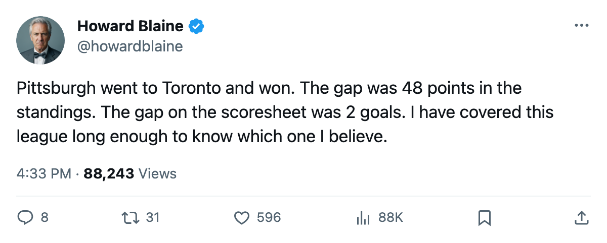
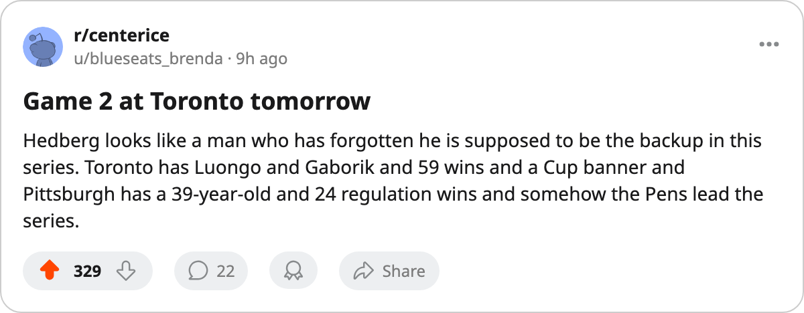

The Bracket, April 23: Pittsburgh won Game 1 at Toronto, and 3 of 4 second-round series have yet to open
The 48-point gap produced an away win on Friday. Two more series begin today, decided by 3 points and 1.
 Howard BlaineSenior writer, The Blaine Rankings · The Hockey Gazette
Howard BlaineSenior writer, The Blaine Rankings · The Hockey Gazette
Pittsburgh scored 3 unanswered after the first period to beat  Toronto Maple Leafs 3-1 on Friday night and take a 1-0 lead in the East's second-round series. It is the first result of the second round, and it came from the club that finished the regular season 48 points behind its opponent.
Toronto Maple Leafs 3-1 on Friday night and take a 1-0 lead in the East's second-round series. It is the first result of the second round, and it came from the club that finished the regular season 48 points behind its opponent.
 Mario Lemieux85, 39 years old, carries 8 points in 7 postseason games for Pittsburgh, including 2 goals and 6 assists.
Mario Lemieux85, 39 years old, carries 8 points in 7 postseason games for Pittsburgh, including 2 goals and 6 assists.  Johan Hedberg86 has a 1.83 goals-against average and a .913 save percentage across 6 wins and 2 losses. On the other bench,
Johan Hedberg86 has a 1.83 goals-against average and a .913 save percentage across 6 wins and 2 losses. On the other bench,  Marian Gaborik99 leads Toronto Maple Leafs with 8 points in 6 games and
Marian Gaborik99 leads Toronto Maple Leafs with 8 points in 6 games and  Roberto Luongo95 has posted a 1.68 GAA with a .954 save percentage. Game 2 is tomorrow at Toronto.
Roberto Luongo95 has posted a 1.68 GAA with a .954 save percentage. Game 2 is tomorrow at Toronto.
The gap of 3 points and the gap of 1
 Tampa Bay Lightning and
Tampa Bay Lightning and  Washington Capitals meet tonight at Tampa Bay with the Eastern Conference's narrowest second-round point gap between them: 3. Tampa Bay finished at 107 points, Washington at 104. The regular-season series was even at 2 wins and 1 overtime loss apiece across 5 meetings. Washington arrives on a 4-0 sweep of
Washington Capitals meet tonight at Tampa Bay with the Eastern Conference's narrowest second-round point gap between them: 3. Tampa Bay finished at 107 points, Washington at 104. The regular-season series was even at 2 wins and 1 overtime loss apiece across 5 meetings. Washington arrives on a 4-0 sweep of  Carolina Hurricanes and a 4-0 start to the postseason overall, having outscored Carolina 13-4 across 4 games. Tampa Bay needed 6 games and 2 shutouts against
Carolina Hurricanes and a 4-0 start to the postseason overall, having outscored Carolina 13-4 across 4 games. Tampa Bay needed 6 games and 2 shutouts against  Boston Bruins to advance.
Boston Bruins to advance.
Edmonton and Anaheim open tonight at Edmonton's arena with 1 point separating them: 98 for  Edmonton Oilers, 97 for
Edmonton Oilers, 97 for  Mighty Ducks of Anaheim.
Mighty Ducks of Anaheim.  Jean-Sebastien Giguere91 grades 97 overall in the Book, the highest mark of any goaltender in the league, and he held
Jean-Sebastien Giguere91 grades 97 overall in the Book, the highest mark of any goaltender in the league, and he held  Nashville Predators to 16 goals in 6 games to close out the first round.
Nashville Predators to 16 goals in 6 games to close out the first round.  Tommy Salo86 grades 85. The regular-season series favored Edmonton Oilers at 2 wins, 1 overtime win and 1 loss, but the goal total was 11-11.
Tommy Salo86 grades 85. The regular-season series favored Edmonton Oilers at 2 wins, 1 overtime win and 1 loss, but the goal total was 11-11.
A sweep followed by a 7-game war
 Dallas Stars and
Dallas Stars and  Phoenix Coyotes have yet to meet in the second round.
Phoenix Coyotes have yet to meet in the second round.  Marty Turco95's Dallas Stars swept
Marty Turco95's Dallas Stars swept  Detroit Red Wings 4-0 in 6 games of actual hockey, winning the 3rd and 4th games at Detroit's arena. Phoenix Coyotes needed all 7 games to eliminate the top-seeded
Detroit Red Wings 4-0 in 6 games of actual hockey, winning the 3rd and 4th games at Detroit's arena. Phoenix Coyotes needed all 7 games to eliminate the top-seeded  Colorado Avalanche, closing with a 4-3 win in Denver on Wednesday. The Coyotes arrive on the road with 16 fewer regular-season points than Dallas, but with one additional game in the legs.
Colorado Avalanche, closing with a 4-3 win in Denver on Wednesday. The Coyotes arrive on the road with 16 fewer regular-season points than Dallas, but with one additional game in the legs.
The first game is Thursday at Dallas, per the schedule, though the bracket had the series opening yesterday. No game was played on April 22.
What Round 1 left behind
Eight clubs are out. The East lost its second seed, its fifth, its sixth and its eighth. The West lost its first, its third, its fourth and its seventh. In the West, the 8th-seeded Coyotes ended the season of the 112-point Avalanche, who had the conference's first home-ice advantage and  Peter Forsberg89 leading the league in assists.
Peter Forsberg89 leading the league in assists.
| Club | Conference seed | Regular-season pts | Eliminated by | Round 1 score |
|---|---|---|---|---|
 New York Islanders New York Islanders | 8 (East) | 84 | Toronto Maple Leafs | 1-4 |
| Boston Bruins | 6 (East) | 97 | Tampa Bay Lightning | 2-4 |
| Carolina Hurricanes | 5 (East) | 100 | Washington Capitals | 0-4 |
 New Jersey Devils New Jersey Devils | 2 (East) | 114 |  Pittsburgh Penguins Pittsburgh Penguins | 2-4 |
| Detroit Red Wings | 7 (West) | 96 | Dallas Stars | 0-4 |
 Vancouver Canucks Vancouver Canucks | 4 (West) | 99 | Edmonton Oilers | 2-4 |
| Nashville Predators | 3 (West) | 101 | Mighty Ducks of Anaheim | 2-4 |
| Colorado Avalanche | 1 (West) | 112 | Phoenix Coyotes | 3-4 |
The lower seed won 4 of the 8 first-round series. In each of those 4, the lower seed leads its second-round series or has yet to open it.
The head coach at Nashville Predators, Som Richards, told The Tunnel's Jan Kowalczyk on Tuesday that the collapse late in the season cost his club, the division winner for most of the year. "You're the best team in the division for most of them, and the last week is, it's ugly. The legs are gone, the margin isn't there anymore." Nashville Predators lost 4 straight to close the regular season and dropped the series to Mighty Ducks of Anaheim in 6.
Toronto has played 6 postseason games and sits on 1 win in its second-round series, trailing by a goal total of 1-3. Pittsburgh has played 7 and sits on 1 win and a 3-1 edge. These two will settle the rest in Pittsburgh's building, if the road continues to hold. It has held through most of this postseason: the lower seed has won 4 of 13 second-round and first-round series combined, and the visitor in tonight's matchups will carry the shorter odds in at least 1 of the 2 games played.

